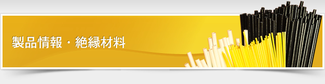
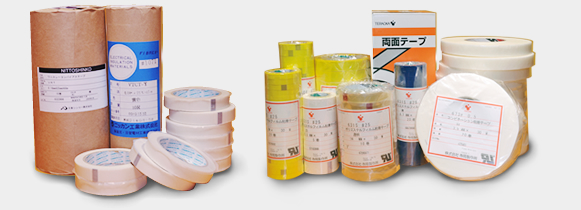

| 種類 | 構造、材質、用途、特徴 | 品種、品番等 |
|---|---|---|
| 電機電子用テープ | 電気絶縁用粘着テープ 難燃性粘着テープ シールド用粘着テープ |
UL等の規格品もございます。御希望のテープ幅での対応が可能です。基材の種類も豊富に取り揃えております。 |
| 産業用テープ | マスキングテープ、両面テープ | 用途に応じて数多い品種よりお選び頂けます。 |
| 梱包用テープ | ガムテープ、パックテープ | 用途に応じて数多い品種よりお選び頂けます。 |
| 非粘着テープ | 電気絶縁用非粘着テープ | 各種基材にワニスを塗布し乾燥させた非粘着テープです。機械的強度や層間絶縁の目的にも使用されます。 |
電機電子用テープ、産業用テープ、梱包用テープ
（株）寺岡製作所、日東電工（株）、住友スリーエム
非粘着テープ
ニッカン工業（株）、日東シンコー（株）、大和テープ（株）
記載されていない商品でもまずは弊社までお問い合わせ下さい。
各メーカーから御希望の材料をお探しいたします。